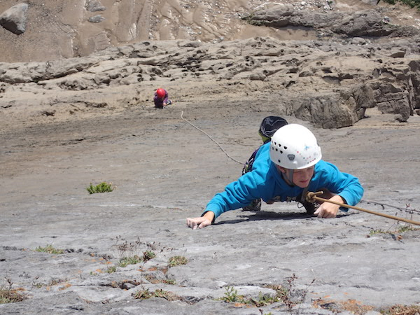

While having a conversation recently with my husband discussing how I could give my time to support others through an existing charity, he suggested that perhaps we could develop a charity of our own. Having knowledge and an understanding of working alongside people with disabilities we both saw the value in the establishment of a Paraclimbing club in the West Midlands.
I started climbing in 2009 due to my own back problems, as a physiotherapist I thought the exercise would help me to stretch and strengthen my back and I was also keen to make new friends having recently moved to a new area and felt quite isolated due to my chronic pain. I now climb to help keep my pain under control, keep fit, have fun and manage my anxiety.
My husband has a long term chronic health condition causing him to have mental health issues and chronic pain. As a result, he has limited range of mobility in his back and lower limbs. This is not immediately apparent when observing him climb.
This has made me look at life differently, as we have had to make adjustments so he can approach his life in a different manner. He used to be a professional yachtsman, shepherd and mountain leader and has had to accept that he can no longer do these things professionally.
This led him into working with young people with mental health issues and disabilities. He continues to rehabilitate his own back and mind through climbing and meditation and is beginning to manage his disability on increasing levels.
Recently we realised there is very little in the community to make this rewarding sport available to those that might benefit from it most. So we decided to form the WMPC with the support of Redpoint in Birmingham. We want to offer the opportunity to rehabilitate and increase health and wellbeing through friendship, trust and gentle exercise. We would like it to be inclusive to everyone who might benefit from the positive aspects of climbing whatever disability you are challenged with. This includes all physical and mental disabilities and all ages.
About Us
The idea and where it came from.
Why are we doing this?

Our aim is that WMPC is used to have fun, socialise and make friends. Climbing in a caring supportive and inclusive setting can improve coordination, strength, fitness and wellbeing, and helps to raise confidence and self-esteem. We hope that members overcome their fears and feel part of a courageous community. As well as recreational climbing, members can use the sessions to train for nationwide competitions and outside expeditions, there are no limits!!!
Who can get involved?
We welcome anyone, any age, including people with:
- Mental health or learning support needs
- Amputees
- Neurological conditions or chronic pain
- Visual or hearing impairment
- Autistic Spectrum condition
With a specialist group of leaders, there are literally no boundaries, for anyone who wants to join in and feel the exhilaration that comes from climbing.